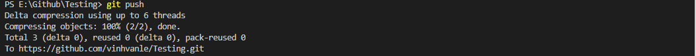
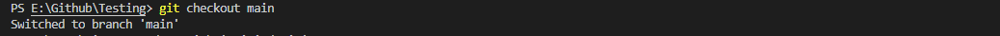
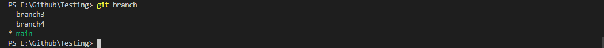
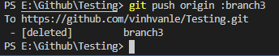

Config commands
- Syntax: git config --global user.name "[name]"
set the author's name
- Syntax: git config --global user.email "[email]"
set the author's email address
This tutorial site will help you learn the basic commands of git and git hub. This knowledge will help you to perform better in your future projects with other people. Note that all the git command shown below are used in terminal. You can access terminal by typing into your windown search bar :"Terminal" or in Visual Studio Code, View -> Terminal (Ctrl + Shift + ~)
- Syntax: git config --global user.name "[name]"
set the author's name
- Syntax: git config --global user.email "[email]"
set the author's email address
- Syntax : git clone [url]
to obtain a repository from an existing online source, such ass github.com

- Syntax : git add [file]
to add a file to the staging area
- Syntax : git add .
to add all files to the staging area

- Syntax : git commit -m "Message you want to add"
to commit changes that you have made on your local computer
- Syntax : git push
to push all the changes that you have made to your remote repository
- Syntax : git checkout -b "branchname"
to create a new branch and switch to it
- Syntax : git checkout "branchname"
to switch to an existing branch
- Syntax : git branch
to see the branches in your repository and which branch you are currently in
- Syntax : git branch -d "branchname"
to delete a branch
- Syntax : git push origin "branchname"
to push your branch to the original remote repository so others can use it
- Syntax : git push --all origin
to push alll branch to the remote repository
- Syntax : git push origin :
To delete a branch on your remote repository
- Syntax : git merge "branchname"
To merge a different branch into your active branch